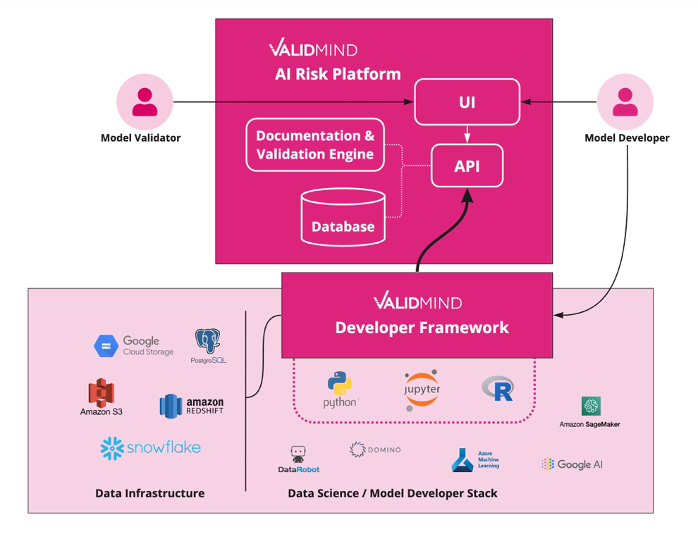

ValidMind Platform Overview
ValidMind is a solution for model risk management (MRM) that enables financial institutions to automate model documentation and validation. We provide:
- A flexible SaaS platform
- Our cloud-based software-as-a-service (SaaS) platform is designed to streamline your model documentation and validation processes, so you can focus on what matters most: interpreting model output and making informed decisions. Our platform seamlessly integrates with your current tools and environments and is designed to be easy to configure and scale to meet your needs. Streamline your model lifecycle management processes and take advantage of a flexible and adaptable solution that meets your specific requirements.
- Automate model documentation and testing
- Enable a higher standard of model risk management for your organization, as our platform helps reduce the risk of human error and ensure models are more robust. Our automated model documentation and model validation features save you time and ensure thorough testing of your models before deployment, minimizing the risk of model failure.
- Enjoy our intuitive, modern user interface
- Collaborate like never before with our user-friendly, intuitive user interface that adapts to your existing workflows. Our platform is the ultimate tool for model developers, validators, and executives, enabling you to manage your models with ease and efficiency. From collaboration and communication between first and second-line teams, to model developers capturing and incorporating feedback from model validation teams, our platform helps you reach better model performance and increased confidence in model outputs.
Product Components
ValidMind consists of two major product components: the developer framework and the cloud-based SaaS platform:

ValidMind Developer framework
ValidMind’s Developer Framework is collection of standalone libraries in Python and R that you set up into their existing development environment. The Developer Framework requires access to the data sources where datasets (training, test, and other applicable datasets) and trained model files are stored to run model documentation and validation tests, and to ValidMind’s SaaS platform to populate the model documentation and validation report.
Our Developer Framework automatically generates documentation for algorithmic models and proactively identifies potential risks for both traditional and machine-learning models, thus enabling effective model validation according to compliance and regulatory requirements, while saving teams hundreds of hours of work writing documents today.
ValidMind SaaS Platform
The SaaS platform implements a multi-tenant architecture to host its SaaS components (application, APIs, databases, and other internal services). Connection to ValidMind’s SaaS platform is done via AWS PrivateLink/Azure Private Link. This network configuration allows you to consume the ValidMind API services and access ValidMind’s SaaS application as if they were local services to their network.
AWS PrivateLink/Azure Private Link provides private connectivity between ValidMind and your on-premises networks without exposing your traffic to the public Internet. Additionally, ValidMind only collects metadata used to generate documentation and present test results for the model developer and validation teams.